Fundamentos da Segurança em Redes
Em um ambiente de rede, onde dados trafegam entre diferentes sistemas através de canais potencialmente inseguros, a segurança torna-se um aspecto crítico. Ataques como escutas, falsificações e modificações de mensagens podem comprometer o funcionamento, a privacidade e a confiabilidade de aplicações e usuários.
Esta seção apresenta os fundamentos necessários para entender como proteger comunicações em redes. Dividiremos o conteúdo em três blocos:
- Objetivos de Segurança — Definem o que queremos garantir em uma comunicação segura: integridade, autenticação e confidencialidade.
- Fundamentos da Criptografia — Apresentam os mecanismos que tornam esses objetivos possíveis, como cifras, funções hash, trocas de chaves e assinaturas digitais.
- Conceitos de Segurança Avançada — Abordam noções mais sofisticadas, como Perfect Forward Secrecy.
Juntos, esses elementos formam a base sobre a qual são construídos protocolos como o IPsec. Compreender esses conceitos é essencial para interpretar, projetar ou avaliar qualquer mecanismo de segurança em redes.
Objetivos da Segurança
Segurança em redes não é um conceito único, mas um conjunto de propriedades que garantem a proteção da comunicação contra ameaças. Antes de estudar os mecanismos técnicos utilizados para assegurar essa proteção, é importante entender os principais objetivos que guiam seu desenvolvimento.
Nesta seção, apresentamos os três pilares fundamentais da segurança: integridade, autenticação e confidencialidade.
Integridade
Garantir a integridade significa assegurar que os dados recebidos são exatamente os mesmos que foram enviados, sem alterações durante a transmissão. Um sistema com integridade detecta modificações acidentais ou maliciosas no conteúdo, incluindo alterações, inserções ou remoções de dados.
Autenticação
A autenticação visa confirmar a identidade de uma das partes envolvidas na comunicação. Em redes, isso normalmente significa garantir que uma mensagem realmente veio de quem afirma tê-la enviado, impedindo que terceiros se passem por entidades legítimas. Além disso, a autenticação também visa garantir o não-repúdio, ou seja, impedir que o remetente negue posteriormente a autoria da mensagem.
Confidencialidade
Confidencialidade é a garantia de que apenas os destinatários autorizados possam acessar o conteúdo de uma mensagem. Mesmo que os dados trafeguem por canais expostos, mecanismos de proteção impedem que informações sensíveis sejam reveladas a interceptadores.
Fundamentos da Criptografia
Para tornar possíveis os objetivos de segurança, foi necessário desenvolver um conjunto de ferramentas matemáticas e computacionais conhecidas como primitivas criptográficas. Essas primitivas são os blocos fundamentais sobre os quais se constroem os protocolos de segurança modernos.
Esta seção apresenta os conceitos centrais da criptografia, servindo como base para entender como sistemas seguros operam.
A Base: One-Way Functions e Trapdoors
Um dos conceitos mais fundamentais da criptografia
moderna é o de função de mão única —
funções que são fáceis de calcular em uma direção, mas
difíceis de inverter. Ou seja, dado um valor de entrada
x, é simples calcular f(x);
porém, dado f(x), encontrar o
x original é considerado computacionalmente
inviável.
Uma boa analogia para entender funções de mão única é a de uma árvore binária completa:
- Folhas: representam todas as entradas possíveis da função.
-
Caminho da folha até a raiz:
representa o processo de aplicar a função.
- Seguir esse caminho é fácil e rápido — basta seguir os ponteiros dos nós até o topo.
- Esse processo tem complexidade baixa (O(log n)), pois o número de passos cresce logaritmicamente com o número de folhas.
-
Caminho da raiz até a folha:
representa o processo inverso — descobrir a entrada
original a partir da saída.
- A raiz pode ter vindo de muitas folhas diferentes.
- Para descobrir qual folha gerou aquela raiz, é necessário explorar toda a árvore.
- Esse processo pode levar tempo exponencial, pois o número de possibilidades cresce rapidamente.
Esse comportamento é semelhante ao das funções de mão única: fáceis de calcular, mas difíceis de inverter.
Algumas dessas funções têm uma característica especial chamada trapdoor (ou porta dos fundos): uma informação secreta que permite inverter a função de forma rápida e eficiente.
Usando a analogia anterior, é como se alguém tivesse um mapa secreto que mostra exatamente qual folha leva até a raiz — enquanto todos os outros precisam explorar a árvore inteira às cegas.
Funções de mão única e trapdoors são a base para a criação de um canal de transmissão seguro em um meio potencialmente inseguro como a internet.
Garantindo Confidencialidade com Cifras
Uma cifra é o mecanismo central da criptografia: ela transforma dados legíveis em uma versão ilegível por meio de um processo matemático, com o objetivo de protegê-los contra acessos não autorizados.
De forma geral, uma cifra é composta por duas funções complementares:
- Criptografar: transforma uma mensagem original, combinada com uma chave, em uma mensagem cifrada (ou criptografada).
- Descriptografar: utiliza a chave para transformar a mensagem cifrada de volta à sua forma original.
Essas funções podem ser representadas assim:
mensagem_cifrada = criptografar(mensagem_original, chave)
mensagem_original = decriptografar(mensagem_cifrada, chave)O funcionamento correto da cifra depende da chave utilizada. Sem a chave apropriada, a mensagem cifrada deve permanecer incompreensível para qualquer pessoa que tente acessá-la.
Cifras são essenciais para garantir a confidencialidade das informações, impedindo que pessoas não autorizadas possam compreender os dados, mesmo que consigam interceptá-los.
Cifras podem ser classificadas quanto à relação das chaves para codificar e decodificar a mensagem: cifras simétricas e cifras assimétricas.
Cifras Simétricas
Utilizam a mesma chave tanto para criptografar quanto para descriptografar uma mensagem. sso significa que, para que duas partes se comuniquem com segurança, ambas devem ter acesso prévio a essa chave secreta — e protegê-la com cuidado.
O processo é eficiente e bem adequado para criptografar grandes volumes de dados.
O principal desafio das cifras simétricas não é a criptografia em si, mas o compartilhamento seguro da chave entre as partes envolvidas.
Cifras Assimétricas
Enquanto cifras simétricas utilizam uma única chave secreta compartilhada entre as partes, cifras assimétricas operam com um par de chaves distintas, porém matematicamente relacionadas: uma chave pública e uma chave privada.
A ideia central é que uma das chaves (geralmente a pública) seja usada para criptografar, e a outra (a privada) para decriptografar. Isso permite que qualquer pessoa envie mensagens cifradas para o dono da chave privada, sem que precise conhecer esse segredo — bastando ter acesso à chave pública.
O funcionamento seguro desse tipo de cifra se apoia diretamente nas funções de mão única com trapdoor, apresentadas anteriormente. A operação de cifragem é fácil de executar (como subir pela árvore da analogia), mas a operação inversa — descobrir o dado original — seria inviável sem o conhecimento da trapdoor, ou seja, da chave privada. É essa assimetria que torna possível o uso seguro da chave pública por qualquer um, sem comprometer a confidencialidade dos dados.
Cifras assimétricas são fundamentais em contextos onde não há troca prévia de segredos, como nas conexões seguras pela internet. Elas são, portanto, uma peça-chave em protocolos como o IPsec, especialmente no processo de estabelecimento inicial de confiança entre as partes.
O principal desafio das cifras assimétricas não é o compartilhamento de chaves, mas sim o seu custo computacional. Elas envolvem operações matematicamente complexas e, por isso, são muito mais lentas do que cifras simétricas. Por essa razão, são inviáveis para transmitir grandes volumes de dados.
Troca de Chaves (Diffie-Hellman / ECDH)
Como vimos, cifras simétricas são muito eficientes para criptografar grandes volumes de dados — mas exigem que ambas as partes compartilhem uma mesma chave secreta. Em contextos como a internet, onde os dados passam por canais potencialmente inseguros, surge uma pergunta fundamental:
Como combinar o desempenho das cifras simétricas com a segurança necessária para trocar essa chave sem que ninguém mais tenha acesso a ela?
É aí que entra o protocolo de Diffie-Hellman: um método engenhoso para que duas partes construam, juntas, uma chave secreta compartilhada, mesmo se comunicando por um canal completamente inseguro.
Exemplo com Alice, João e Jéssica
Imagine que Alice e João queiram trocar mensagens confidenciais usando uma cifra simétrica. Mas primeiro, eles precisam de uma chave secreta comum. O problema é que toda a comunicação entre eles passa pela internet, onde alguém como Jéssica, uma observadora mal-intencionada, pode interceptar tudo o que é enviado.
Com o protocolo Diffie-Hellman, mesmo que Jéssica veja todas as mensagens, ela não conseguirá descobrir a chave final. Veja como funciona:
-
Parâmetros públicos: Alice e João
combinam dois valores públicos:
- Um número primo grande:
p - Uma base (gerador):
g
- Um número primo grande:
-
Segredos individuais: Cada um
escolhe um número secreto:
- Alice escolhe
a - João escolhe
b
- Alice escolhe
-
Cálculo dos valores públicos
individuais:
Usando
gep, cada um calcula um valor que será enviado ao outro:-
Alice calcula:
A = ga mod p -
João calcula:
B = gb mod p
AeBsão enviados publicamente. Jéssica pode vê-los, mas não conheceanemb. -
Alice calcula:
-
Cálculo da chave compartilhada:
Cada um usa o valor que recebeu e o próprio segredo
para calcular a mesma chave:
-
Alice faz:
K = Ba mod p -
João faz:
K = Ab mod p
(gb)a mod p = gab mod p (ga)b mod p = gab mod pOu seja, ambos obtêm exatamente o mesmo valorK, sem nunca terem enviado diretamente essa chave! -
Alice faz:
-
E Jéssica? Mesmo que Jéssica tenha
acesso a
g,p,AeB, ela não consegue calcularK, pois isso exigiria descobriraoub— algo considerado computacionalmente inviável com os parâmetros certos (problema do logaritmo discreto).
Ao final desse processo, Alice e João compartilham uma chave secreta, construída a partir de valores públicos, mas que só eles conhecem. Agora, eles podem usar essa chave para aplicar uma cifra simétrica e trocar mensagens seguras, mesmo passando por um canal totalmente exposto.
A beleza do Diffie-Hellman é que ele elimina a necessidade de transmitir a chave secreta diretamente, resolvendo de forma elegante o maior desafio das cifras simétricas: o compartilhamento seguro da chave.
Uma variação moderna e mais eficiente do protocolo é o Elliptic Curve Diffie-Hellman (ECDH), que utiliza curvas elípticas para alcançar o mesmo objetivo com chaves menores e maior segurança. Esse método é amplamente utilizado em sistemas como o IPsec, que protege a comunicação em redes IP.
No entanto, o protocolo Diffie-Hellman possui uma limitação importante: ele não garante autenticidade. Ou seja, não há nenhuma verificação de que Alice está realmente falando com João — qualquer pessoa poderia fingir ser um deles durante a troca de chaves. Isso abre espaço para o chamado ataque do homem no meio (Man-In-The-Middle — MITM).
Nesse cenário, uma atacante como Jéssica pode interceptar as mensagens e executar duas trocas separadas de chave: uma com Alice e outra com João. Cada um acreditará que está falando com o outro, mas, na verdade, estarão se comunicando com Jéssica, que pode ler, modificar ou até repassar as mensagens sem que percebam.
Funções Hash, HMAC e Assinatura Digital
Funções Hash
Funções hash são funções matemáticas que recebem uma entrada de tamanho arbitrário (como uma mensagem, um arquivo ou uma senha) e produzem uma saída de tamanho fixo, chamada de resumo ou hash. Esse resumo é como uma “impressão digital” da entrada: mesmo uma pequena mudança na mensagem original gera um hash completamente diferente.
Uma boa função hash deve possuir as seguintes propriedades:
- Determinística: a mesma entrada sempre gera o mesmo hash.
- Irreversível: não é possível recuperar a entrada original a partir do hash.
- Resistente a colisões: é muito difícil encontrar duas entradas diferentes que produzam o mesmo hash.
Essas propriedades permitem que funções hash sejam usadas para garantir a integridade de dados transmitidos. O processo funciona da seguinte forma:
- O remetente calcula o hash da mensagem original.
- Esse hash é enviado junto com a mensagem.
- O destinatário, ao receber a mensagem, também calcula o hash do conteúdo recebido.
- Por fim, ele compara o hash calculado com o hash enviado.
Se os dois valores forem iguais, é muito provável que a mensagem não foi alterada durante o envio. Se forem diferentes, isso indica que a mensagem sofreu alguma modificação no caminho.
Importante: embora funções hash garantam integridade, elas não garantem autenticidade. Um atacante pode interceptar a mensagem, alterá-la e enviar um novo hash correspondente. Por isso, mecanismos como o HMAC são necessários para garantir que o conteúdo veio realmente de quem diz ter enviado.
HMAC: Autenticando com Hashes
Apesar de garantir a integridade dos dados, uma função hash sozinha não garante autenticidade. Por exemplo, se Alice envia o hash de uma mensagem para João, qualquer pessoa poderia gerar um novo hash para outra mensagem. Para resolver isso, é utilizado o HMAC (Hash-based Message Authentication Code).
O HMAC combina uma função hash com uma chave secreta. Assim, somente quem possui a chave pode gerar ou verificar o código HMAC corretamente. Isso garante tanto a integridade quanto a autenticidade da mensagem.
Em resumo, se Alice e João compartilham uma chave secreta e Alice envia uma mensagem acompanhada de um HMAC, João pode calcular o HMAC por conta própria e verificar se bate com o que recebeu. Se sim, ele sabe que a mensagem não foi alterada e que veio de alguém que conhece a chave — presumivelmente, Alice.
Assinatura Digital e Certificados
O HMAC exige uma chave secreta compartilhada previamente. Mas em muitos casos — como em sites acessados por navegador — isso não é viável. É aí que entra a assinatura digital.
Assinaturas digitais usam criptografia assimétrica. O emissor da mensagem utiliza sua chave privada para gerar uma assinatura baseada no hash da mensagem. Quem recebe a mensagem pode usar a chave pública correspondente para verificar se a assinatura é válida — ou seja, se foi realmente gerada por quem diz ser o remetente e se a mensagem não foi alterada.
Mas como ter certeza de que a chave pública realmente pertence a quem diz? Para isso existem os certificados digitais: documentos assinados digitalmente por uma entidade confiável que atesta que determinada chave pública pertence a uma pessoa, organização ou site específico.
Esses certificados são emitidos por entidades chamadas Autoridades Certificadoras (CA — Certificate Authorities), como a Let's Encrypt, DigiCert ou a ICP-Brasil. Elas são reconhecidas por sistemas e navegadores, que confiam em suas assinaturas. Assim, quando um navegador encontra um certificado assinado por uma CA confiável, ele aceita que a chave pública é autêntica.
Juntos, assinatura digital e certificados digitais resolvem o problema de autenticação em comunicações seguras — como aquele que vimos na troca de chaves Diffie-Hellman, onde havia o risco de um atacante se passar por outra pessoa.
Elevando o Nível de Segurança
Perfect Forward Secrecy (PFS)
O Perfect Forward Secrecy (PFS) é uma propriedade desejável em protocolos criptográficos que garante que o comprometimento de uma chave de longo prazo não comprometa sessões anteriores.
Em protocolos que não oferecem PFS, se uma chave privada for descoberta no futuro, todas as comunicações passadas que foram interceptadas por um invasor podem ser decriptadas retroativamente.
Já em sistemas com PFS, mesmo que a chave privada de longo prazo seja comprometida, cada sessão anterior continua protegida, pois:
- As chaves de sessão são temporárias e únicas para cada conexão.
- Elas são descartadas após o fim da sessão, não sendo armazenadas.
- São geradas usando algoritmos como o Diffie-Hellman efêmero (DHE) ou o Elliptic Curve Diffie-Hellman efêmero (ECDHE).
Com isso, mesmo que um atacante armazene todos os dados trafegados por anos, eles não conseguirão decifrá-los futuramente caso obtenham uma chave estática, pois essas chaves não permitem recuperar o segredo de sessões passadas.
O PFS é especialmente importante em ambientes onde se presume que adversários possam armazenar grandes volumes de tráfego e tentar quebrar a segurança futuramente, como em conexões HTTPS, VPNs e protocolos de segurança na internet.